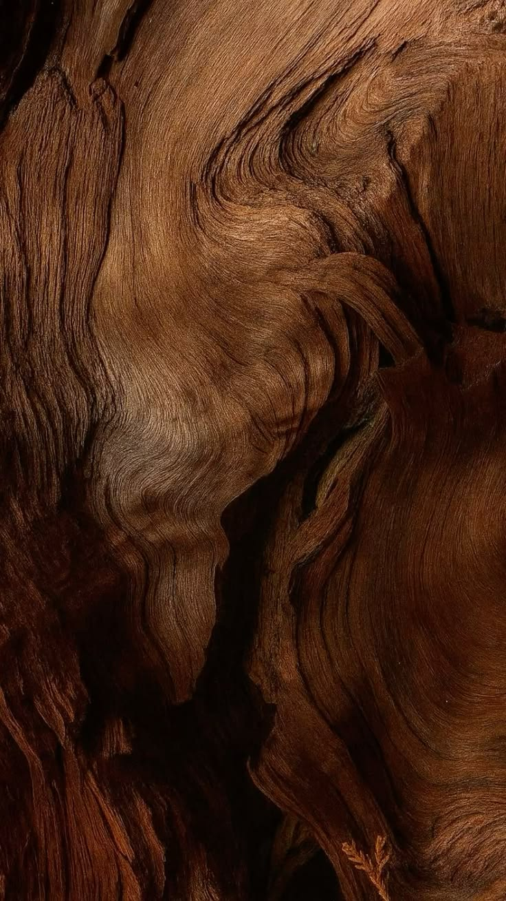
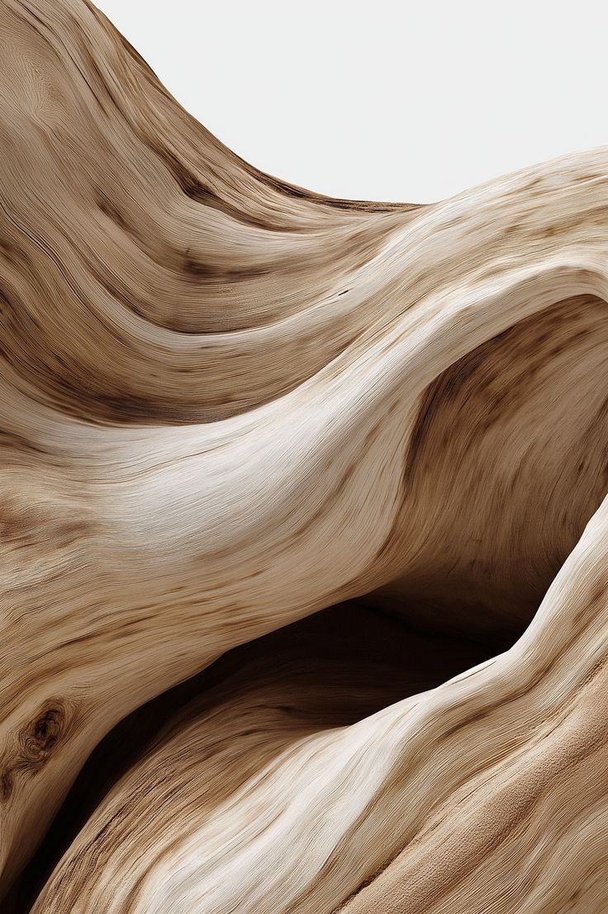
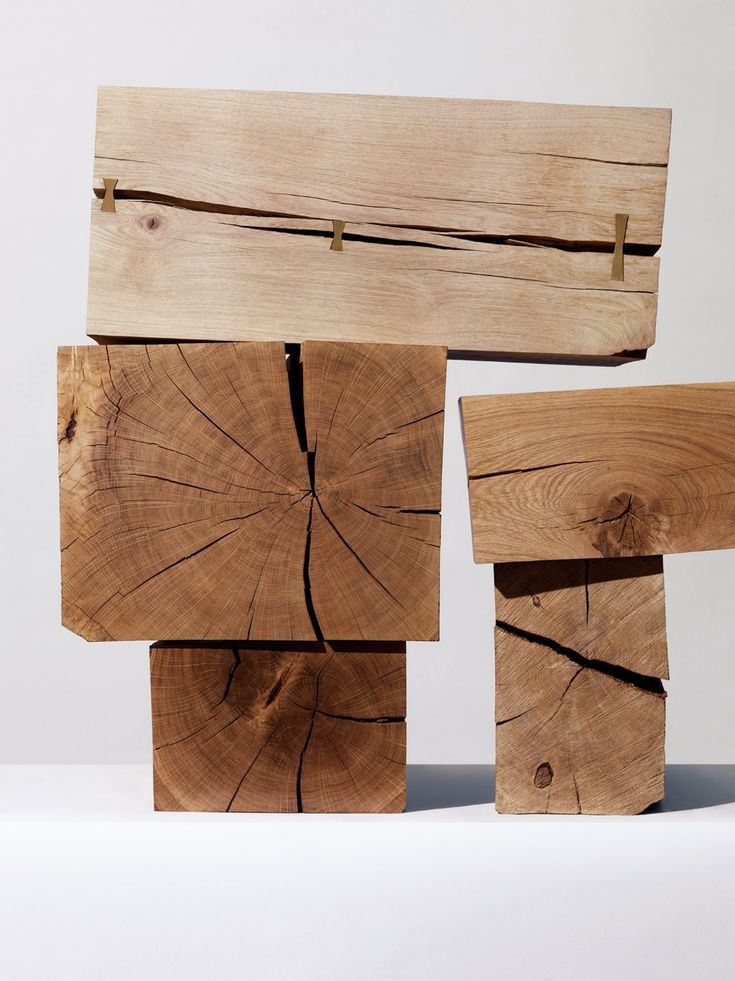
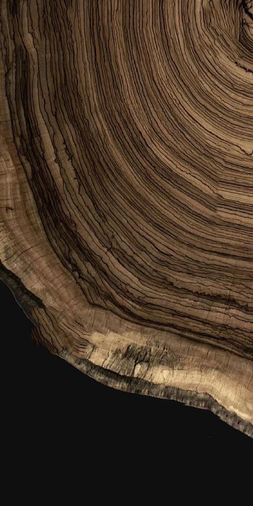
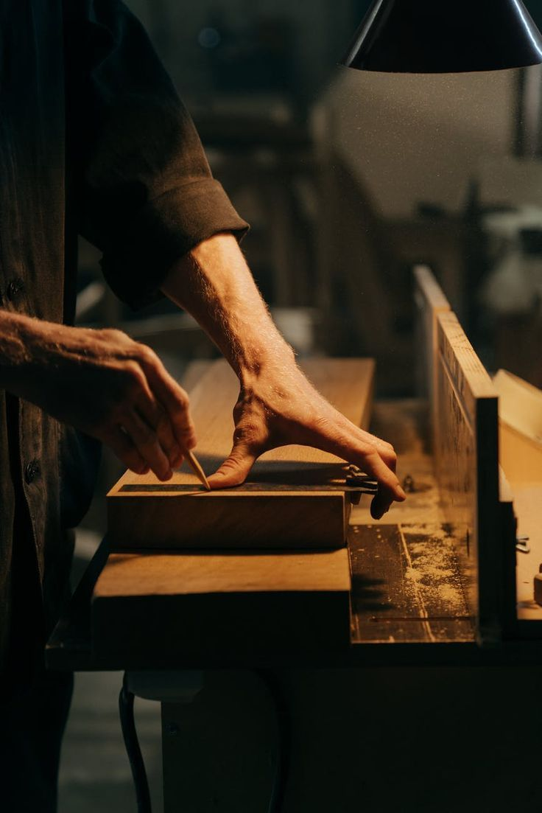
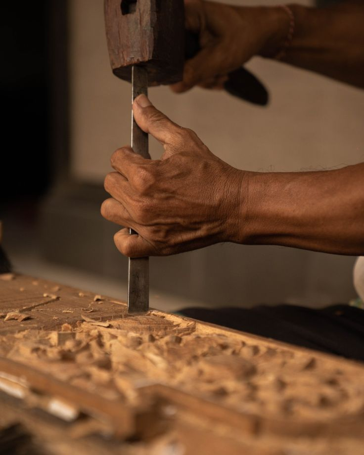
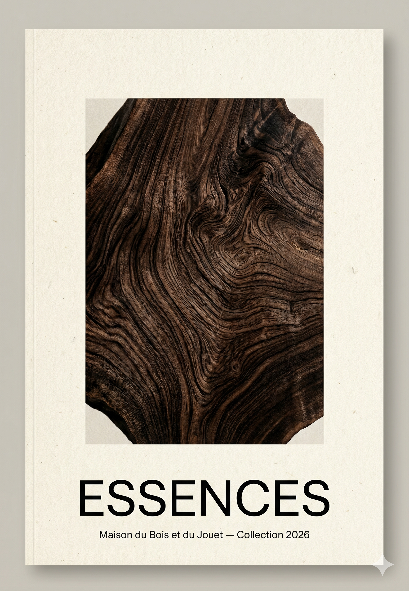
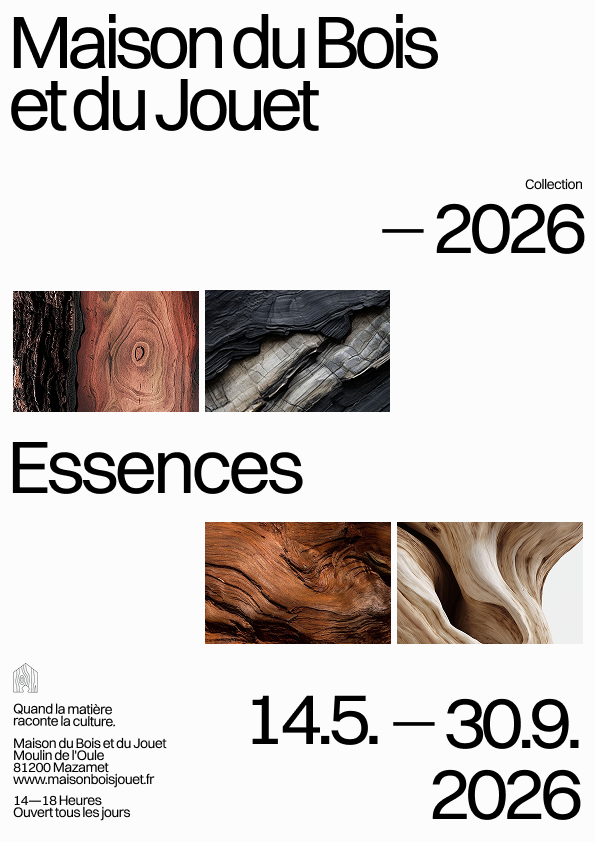
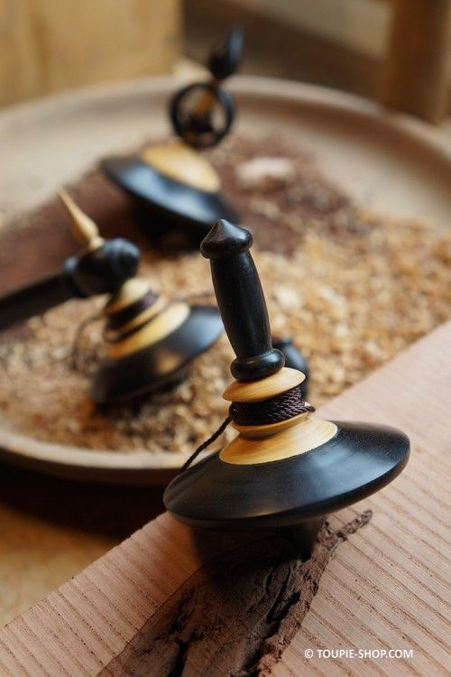
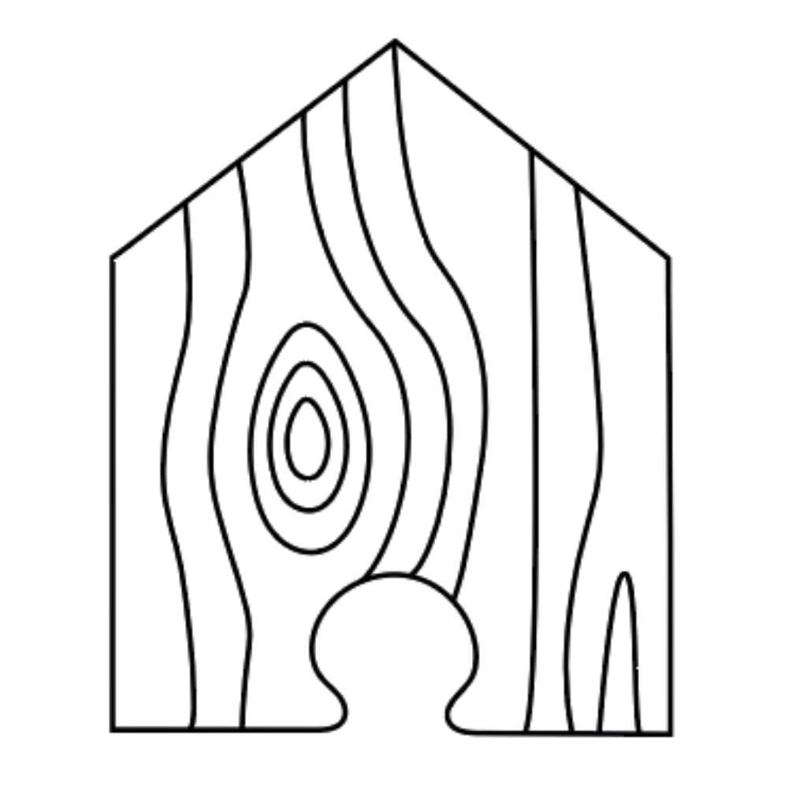

Région
Titre
Essences
Bois
Description
Le monde raconté par la forme et la matière.

Dans cette exposition inédite, le bois n'est plus un simple support, il est l'ADN du jouet. Une poupée Kokeshi née des forêts japonaises, une toupie taillée dans l'ébène africain... Découvrez comment l'essence locale devient l'identité même de l'objet ludique.




L'exposition remonte le fil du temps jusqu'à l'atelier. Copeaux, sève, outils séculaires : découvrez le dialogue intime entre l'artisan et l'essence brute. Un hommage aux mains qui façonnent la culture avant que l'objet ne prenne vie.




Moulin de l'Oule
81200 Mazamet, France
